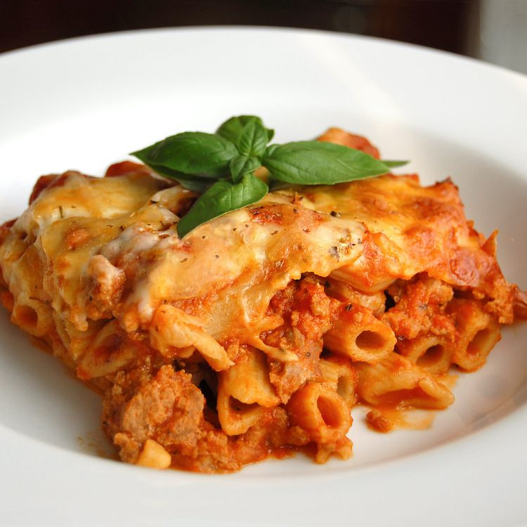

Baked Ziti

Ziti Ingredients
1 pound dry ziti pasta
1 onion, chopped
1 pound lean ground beef
2 (26 ounce) jars spaghetti sauce
6 ounces provolone cheese, sliced
1 1/2 cups sour cream
6 ounces mozzarella cheese, shredded
2 tablespoons grated Parmesan cheese
Steps
Step 1:
Bring a large pot of lightly salted water to a boil. Add ziti pasta, and cook until al dente, about 8 minutes; drain.
Step 2:
Meanwhile, brown ground beef and onion in a large skillet over medium heat; stir in spaghetti sauce and simmer for 15 minutes.
Step 3:
Preheat the oven to 350 degrees F (175 degrees C). Butter a 9x13-inch baking dish.
Step 4:
Spread 1/2 of the ziti in the bottom of the prepared dish; top with Provolone cheese, sour cream, 1/2 of the meat sauce, remaining ziti, mozzarella cheese, and remaining meat sauce. Top with grated Parmesan cheese.
Step 5:
Bake in the preheated oven until heated through and cheeses have melted, about 30 minutes.
Back HOME